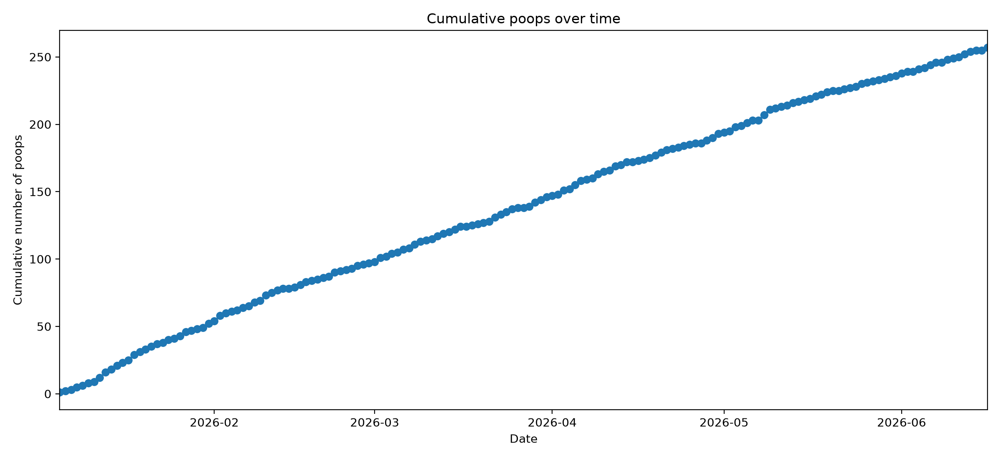
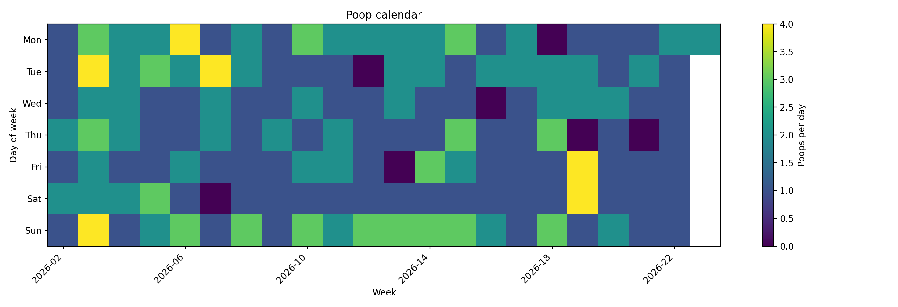
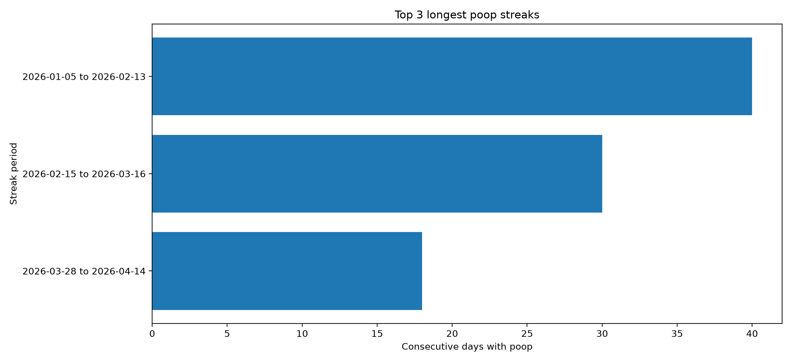
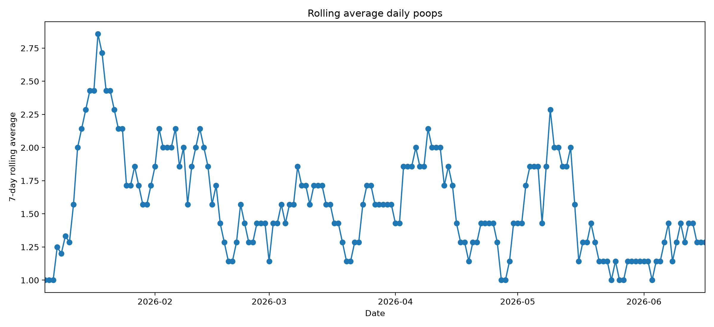
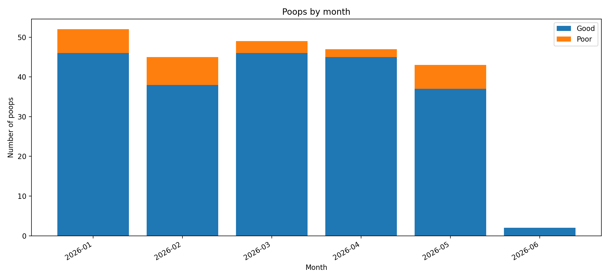
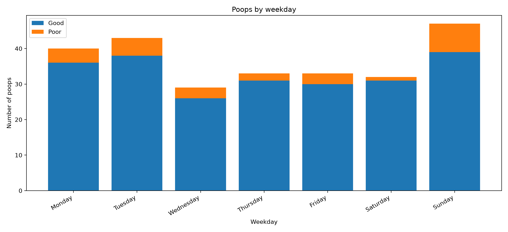
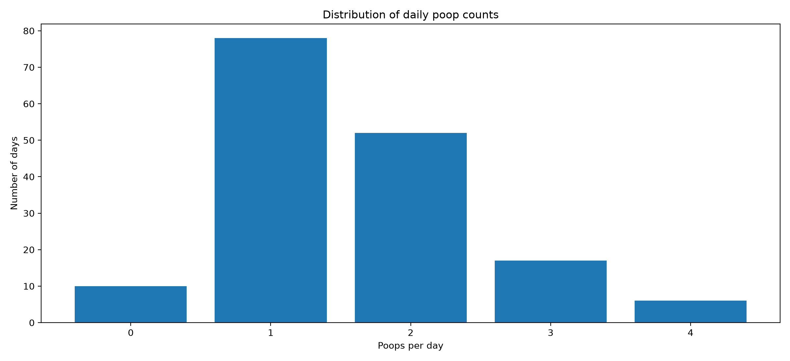
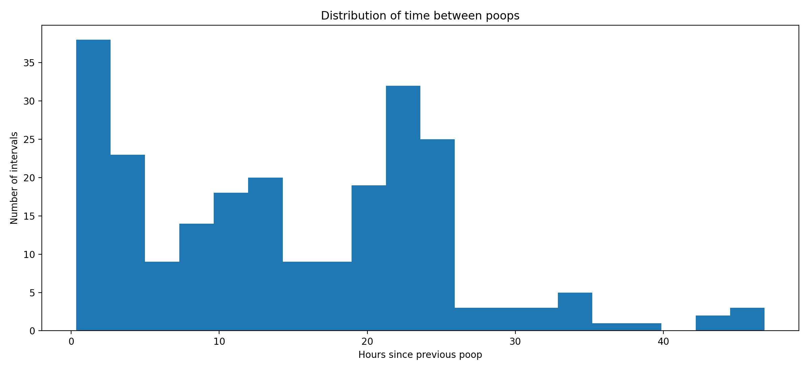
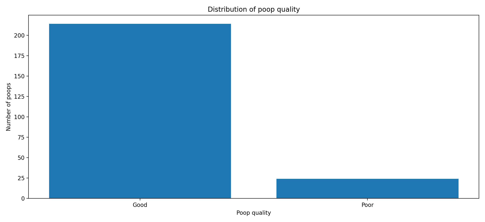

Total observations
238
Days covered
148
Days with poop
141
Zero-poop days
7
Average/day
1.61
Median/day
1.0
Maximum/day
4
Good poops
214
Poor poops
24
Good poop rate
89.9%
Poor poop rate
10.1%
Most common hour
8:00
Cumulative poops over time

Daily frequency

Poop calendar

Top three longest poop streaks

Rolling average daily poops

Poops by month

Hour of day

Poops by weekday

Distribution of daily poop counts

Distribution of time between poops

Distribution of poop quality
